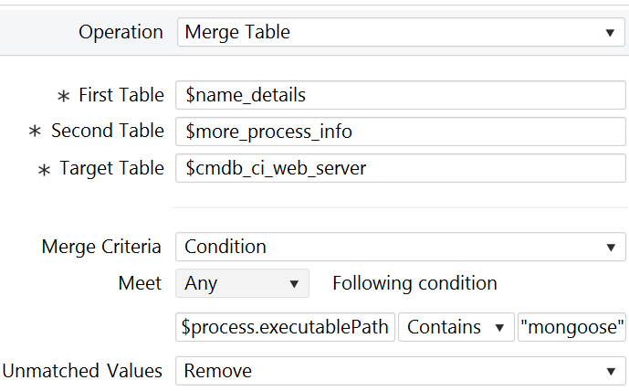
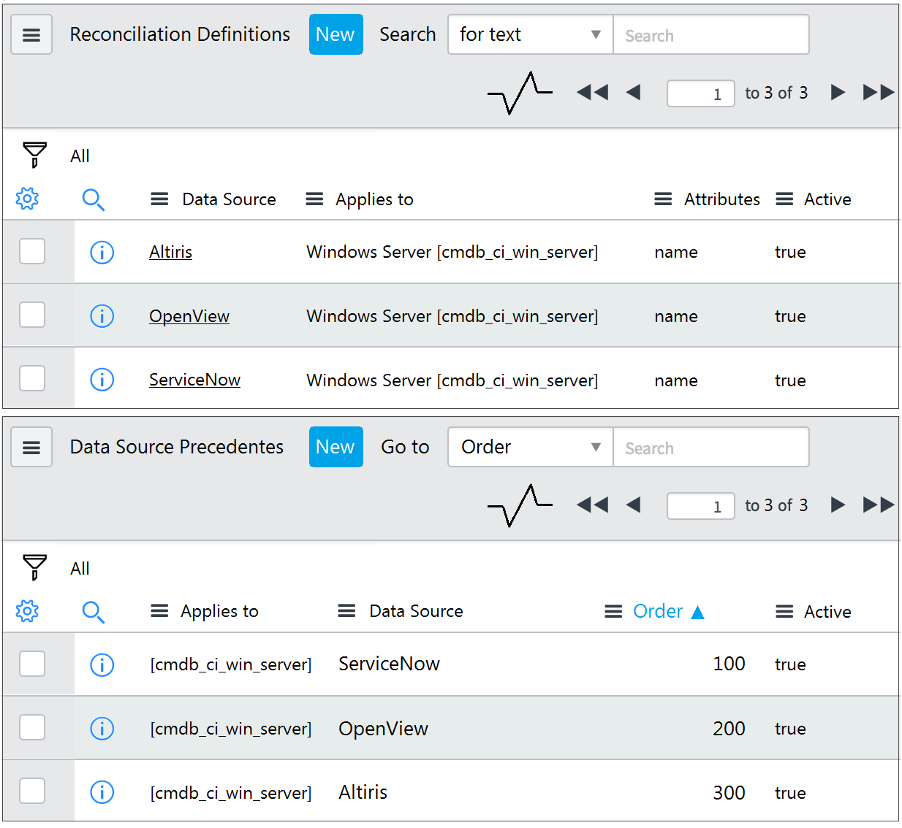
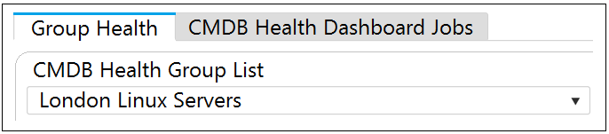
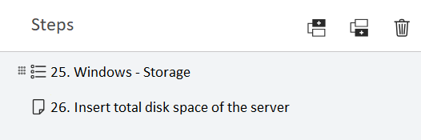
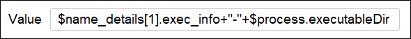
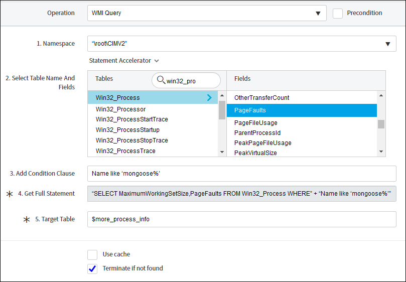

Answers verified with AI using ServiceNow documentation. Exercise your own judgement.
Question 1

Based on this image, which of the following statements are true? (Choose three.)
A. Attributes from two tables populate a table with the same name as a ServiceNow CMDB table.
B. This operation is more than likely a part of a step on a pattern set to Application Pattern Type.
C. If a value is unmatched, it is still merged into the Target Table.
D. For this operation to run, there must be some data in the process.executablePath variable.
E. This is a horizontal pattern of type "infrastructure."
Question 2

Based on the following images, which choice best describes what occurs if Discovery sets the name attribute of a discovered Windows Server CI to 'Windows1' and then Altiris discovery runs detecting 'Windows2' for the name attribute on the same CI?
A. The name of the CI stays 'Windows1'.
B. The name of the CI changes to 'Windows2'.
C. The name of the CI does not populate with either discovery.
D. The CI is not discovered because Discovery is not listed in either image.
Question 3
For the Parse Variable pattern operation, what is required to have two different parsing methods to populate variables?
A. Two different Debug Mode sessions.
B. A tabular and a scalar variable.
C. Two different steps.
D. Two different Define Parsing selections on the same step.
Question 4
Which best describes Discovery schedule of type Configuration Item?
A. Verifies Configuration Item data from the scanned IP ranges against the data in the CMDB.
B. Creates only a list of discovered IPs in both IPv4 and IPv6 formats.
C. Collects complete information from the scanned IP ranges and sends it to the CMDB.
D. Directly populates records in the assets table.
Question 5
When installing a MID Server on a Windows platform, which right must be associated when creating a Service Account?
A. Root
B. Domain Admin
C. MID Server User Role
D. Log on as service
Question 6
Which of the below choices are needed for Quick Discovery? (Choose two.)
A. MID Server
B. Discovery Schedule
C. PID
D. Target IP
Question 7
In order to use Debug from the Pattern Designer, you must have what?
A. a proxy server
B. a discoverable CI
C. the admin role
D. Service Mapping installed
Question 8
A discovery runs against a Windows Server returning the following attribute values for the first time: name = WindowsSN1 serial_number = 12321 A subsequent discovery runs against a different Windows Server returning the following attribute values: name = WindowsSN2 serial_number = 12321 With only base system CI Identifiers configured, which of the following is true?
A. A Windows Server CI is created, then updated with WindowsSN2 as the name.
B. Two Windows Sewer CIs are created, with WindowsSN1 AND WindowsSN2 for names.
C. Two Windows Server CIs are created, without serial_number values.
D. A Windows Server CI is created, then updated with WindowsSN1 as the name.
Question 9
Which choice represents the three best ways of extending Discovery?
A. Orchestration, Classifiers, Discovery Patterns
B. Fingerprinting, Classifiers, Discovery Patterns
C. Orchestration, Classifiers, Probes & Sensors
D. Classifiers, Probes & Sensors, Discovery Patterns
E. Classifiers, Fingerprinting, Probes & Sensors
Question 10
SNMP Credentials require which of the following?
A. write community strings
B. usernames
C. read community strings
D. port 135 access
Question 11
Which choice will populate the Location field for a discovered CI?
A. Location field for a Discovery Schedule
B. Location field for a parent CI Type
C. Location field for a Port Probe
D. Location report from the Discovery Dashboard
Question 12
What role is needed by the MID Server's user account to interact with a ServiceNow instance?
A. mid_server
B. discovery_admin
C. sm_mid
D. mid_discovery
Question 13
Which operation is used to change from the default credentials to any other appropriate credentials in a horizontal pattern?
A. Change credentials
B. Change user
C. Alternate credentials
D. Alternate user
Question 14
After navigating to an Automaton Error Messages list from Discovery > Home, how are the options on the right navigation pane categorized? (Choose two.)
A. SELECT ALL
B. SELECT ONE
C. ACTION ON SELECTED
D. ACTION ON ALL
Question 15
Which of the following can be used in the Debug Identification Section in Debug Mode for an infrastructure pattern? (Choose two.)
A. IP
B. AWS Endpoint
C. PID
D. Host Name
Question 16
With multiple CI data sources, which choice is the best for determining which source can update a CI attribute?
A. Business Rules
B. Data Certification
C. Transform Maps
D. Reconciliation Rules
Question 17
One method for deleting specific CIs not discovered in 30 days is:
A. Scheduled Job
B. UI Policy
C. Service Mapping
D. Data Policy
Question 18
Which of the following choices must be installed on a MID Server to run Credential-less Discovery?
A. Credential-less Extension
B. Nmap
C. Advanced IP Scanner
D. Defender
Question 19
A network device has both an SSH port and an SNMP port open. Discovery tries the SSH probe first and it fails. This triggers the SNMP probe, which succeeds. Discovery uses SNMP first for subsequent discoveries on that device. What discovery functionality allows the above to happen?
A. Classification
B. Credential affinity
C. MID Server affinity
D. IP service affinity
Question 20
The CMDB contains which of the following record types? (Choose two.)
A. Model
B. Configuration Item (CI)
C. Asset
D. Relation Type
Question 21
When is the Extension section in a horizontal pattern executed?
A. As part of the post sensor processing script
B. After the Identification sections
C. As part of the port scan
D. Before the Identification sections
Question 22
For CMDB Health, relationships can be which of the following choices? (Choose three.)
A. Duplicate
B. Stale
C. Orphan
D. Required
E. Recommended
Question 23
Which of the choices provides active discovery errors with a help link for each error?
A. Discovery Dashboard
B. IP Address Failure Report
C. Discovery Schedule
D. MID Server Dashboard
Question 24
What related list on a classifier dictates which Horizontal Pattern probe is launched?
A. Discovery Log
B. Classification Criteria
C. Pattern probes
D. Triggers probes
Question 25
Which of the following does the ECC Queue provide? (Choose two.)
A. Login credentials for the MID Server host.
B. The actual XML payload that is sent to or from an instance.
C. A connected flow of probe and sensor activity.
D. The process responsible for defining, analyzing, planning, measuring, and improving all aspects of the availability of IT services.
Question 26
Which of the following choices are only used for the Application Pattern Type? (Choose two.)
A. Run Order
B. Identification Section
C. CI Type
D. Operating System
Question 27
By default, which of the following are automatically available as variables for horizontal discovery patterns? (Choose two.)
A. infrastructure_system
B. The CI Type on the Discovery Pattern form
C. windows_cmdb_ci
D. computer_system
Question 28
Which choices are necessary to launch any pattern? (Choose two.)
A. CI Classification
B. CI Serial Number Attribute
C. Data Certification
D. CI Type
Question 29
Which of the below choices are horizontal pattern types? (Choose two.)
A. Hardware
B. Software
C. Infrastructure
D. Application
Question 30
What does the MID Server need to collect vCenter events?
A. vCenter Event Collector extension
B. MID SNMP Trap Listener extension
C. Firewall
D. vCenter probes
Question 31
A Discovery Schedule contains a /24 subnet IP Range and a Shazzam batch size of 5000. How many times will a Shazzam probe be launched during discovery?
A. 1
B. 2
C. 5000
D. 254
Question 32
Which method is used by Discovery to determine if a Host IP is active or alive?
A. Port Scan
B. Traceroute
C. Ping
D. Classification
Question 33
Discovery finds and maps dependencies for the following types of storage devices. (Choose three.)
A. Direct-attached storage (DAS)
B. Network-attached storage (NAS)
C. Storage area network (SAN)
D. Multiple area network (MAN)
E. Redundant Array of Independent Disks (RAID)
Question 34
Which choice allows the following functionality to occur? If this value is set to 1000 and a discovery must scan 10,000 IP addresses using a single MID Server, it creates 10 Shazzam probes with each probe scanning 1000 IP addresses.
A. MID Server Clusters
B. MID Server selection method
C. Shazzam Batch Size
D. Behaviors
Question 35
Which choice best describes how to use a Behavior for discovery?
A. The MID Server selection method on a Discovery Schedule.
B. The Behavior drop-down menu on a Discovery IP Range.
C. The Behavior drop-down menu on a Discovery Status.
D. The Behavior checkbox on a CI.
Question 36
Which of the following pattern operations query targets? (Choose two.)
A. WMI Query
B. Merge Table
C. Get Process
D. Parse Variable
Question 37
File-based Discovery is triggered during the __________.
A. Classify Phase
B. Scan Phase
C. Exploration Phase
D. Pattern Phase
E. Identification Phase
Question 38
Given a custom column named u_custom_column on table cmdb_ci_linux_server, which variable syntax should be used to populate the column in a horizontal discovery pattern using the Set Parameter Value operation?
A. $user_var_custom_column
B. $cmdb_ci_linux_server.u_custom_column.INSERT
C. $u_custom_column[1].cmdb_ci_linux_server
D. $cmdb_ci_linux_server[*].u_custom_column
Question 39
What entry point type must a horizontal pattern have to execute from a process classifier?
A. A subnet entry point type.
B. HTTP(S) entry point type if the pattern is running on a web server application.
C. TCP entry point type or ALL entry point type.
D. It does not matter, it is triggered for all entry point types.
Question 40
Which metrics comprise the Completeness KPI for CMDB Health? (Choose two.)
A. Required
B. Recommended
C. Audit
D. Overall
Question 41
Which of the following choices explain differences between Service Mapping and Discovery? (Choose two.)
A. Discovery requires agent installation to find hardware devices, Service Mapping requires agents for software.
B. Discovery finds applications and devices on your network, Service Mapping monitors those devices.
C. Discovery utilizes IP address ranges for initial discovery, Service Mapping uses entry points.
D. Discovery addresses inventory-related use-cases, while Service Mapping allows for the creation of accurate maps of application service topologies.
Question 42
What are the two main options within a Parse File operation?
A. Discover Now and Quick Discovery
B. Select Operating System and Method
C. Select File and Define Parsing
D. Match and Select File
Question 43

Based on the following image, which of the following choices is also true about London Linux Servers?
A. It is a CMDB Group with Dashboard Group type.
B. It is a CMDB Group with Health Group type.
C. It is a Datacenter Group in London.
D. It is a CMDB Group with Default Group type.
Question 44
For the Set Parameter Value operation, which of the following is used in the syntax to declare a constant, unchanging Value?
A. Hash tag
B. Brackets
C. Quotes
D. Dollar sign
Question 45
From an SNMP Query pattern operation, which of the choices are valid Variable Types? (Choose two.)
A. Test
B. Table
C. Scalar
D. CI Type
Question 46
Which choice best describes what happens when, by default, duplicate CIs are detected during identification and reconciliation?
A. A notification is sent to the CI owner.
B. An associated identification rule is created automatically.
C. Each set of duplicate CIs is added to a de-duplication task.
D. The next discovery is stopped for the CI that is duplicated.
Question 47
Which choice best describes a horizontal discovery pattern?
A. Steps that execute operations
B. Credential depot
C. Port scanning tool
D. Classifiers that execute probes
Question 48
A config file for an application has the following three lines: Line 1: app build 1.2.3.4 version 5.14 Line 2: installation_dir=c:\opt\bin Line 3: build_type=Server. Which methods below will extract the build and version numbers from these lines using a horizontal discovery pattern? (Choose two.)
A. Get Process operation with correct Port
B. Find Matching URL operation with Target Variable
C. Parse File operation with Delimited Text parsing strategy
D. Parse File operation with Regular Expression parsing strategy
Question 49

The following shows part of the Windows OS - Servers pattern in Pattern Designer:
Which of the steps above use(s) a shared library?
A. Step 26
B. Neither step
C. Step 25
D. Both steps
Question 50
Which of the following is required for a MID Server to have access to automatically stay up-to-date with instance versions?
A. install.service-now.com
B. docs.servicenow.com
C. developer.service-now.com
D. service-now.com
Question 51
When designing steps with operations requiring variables, it is best practice to do what?
A. hard core variables
B. always use scalar variables
C. query targets for variables
D. design for a static environment
Question 52
For what is File Based Discovery used?
A. To discover the checksum of a file and store it to track for changes
B. To discover the contents of flat files such as configuration files
C. To discover that file names conform to a defined naming standard
D. To discover file paths to recognize the signature of installed software
Question 53
Which of the following properties define the maximum overall size for the returned payload that comes from patterns?
A. cmdb.properties.payload_max_size
B. glide.discovery.payload_max
C. mid.discovery.max_payload_size
D. mid.discovery.max_pattern_payload_size
Question 54

Based on this image, which of the following choices is true?
A. This is from a WMI query operation step.
B. There is a scalar variable labeled ‘1’.
C. This Value cannot be used in a pattern step.
D. There is a tabular variable named ‘name_details’.
Question 55
Using the SNMP Query operation on a pattern for a custom device query, it is best practice to do what?
A. Modify the default MIB information
B. Enable SSH as a secondary protocol
C. Use live devices in production
D. Use the publish manufacturer’s device MIB
Question 56
After running Discovery and viewing the ECC Queue tab, what are some of the displayed default fields? (Choose three.)
A. Details
B. Topic
C. Pattern log link
D. CMDB CI
E. Queue
F. Source
G. Discovery schedule name
Question 57
Hardware Models can have a one-to-many relationship with the following: (Choose three.)
A. Assets
B. Manufacturer
C. Configuration Items
D. Product owner
E. Model Categories
Question 58
Which choice best represents how to modify the functionality shown in this image?
A. From a Classifier
B. From a Discovery Pattern
C. From the MID Server
D. From a Probe
Question 59
What is the recommended method of consolidating duplicate CIs?
A. Duplicate CI Remediator
B. Event CI Remediation
C. Ignore Duplicate CI
D. Manual CI Remediation
Question 60
During the Discovery process, what determines if an Asset record is created?
A. CMDB
B. Model Category
C. Model Product
D. ECC Queue
E. Configuration Item
Question 61
What pattern operation allows the transfer of a file from the MID Server to a target?
A. Parse file
B. Create Connection
C. Put file
D. Manage Attachments
Question 62
On the ECC Queue, sensor records have a Queue value of ___________ and probe records have a Queue value of ___________.
A. input, output
B. started, ready
C. ready, started
D. output, input
Question 63
In Discovery, what table associates an IP address and a credential?
A. Credential Affinity
B. Service Affinity
C. Service CI Association
D. Tags
Question 64
If the WMI service is not running on a host, it will prevent the discovery of which devices?
A. Network
B. Windows
C. Storage
D. Unix
Question 65
In general, Discovery can provide which of the following kinds of application relationships? (Choose two.)
A. tcp to udp
B. application to application
C. mid server to target
D. host to application
Question 66
Which of the following must be configured to allow a MID Server to access servers using WinRM? (Choose two.)
A. JEA Properties set to True
B. MID Servers must be configured as a trusted source with DNS
C. MID Servers need to be added to the WinRM Group policy on the Servers
D. MID Server Parameters Add WinRM
Question 67
For a pattern operation, which of the below choices could be a valid replacement for <_>? (Choose three.) $IfTable<_>.InstanceID
A. [3]
B. [X]
C. [&]
D. [.]
E. [*]
F. []
Question 68

Which of the below choices are the most probable results of the following image? (Choose three.)
A. A tabular variable named ‘WMI Query’.
B. A scalar variable named ‘MaximumWorkingSetSize’
C. A scalar variable named ‘PageFaults’.
D. A scalar variable named ‘PeakVirtualSize’.
E. A tabular variable named ‘more_process_info’.
F. A tabular variable named ‘Win32_Process’.
Question 69
What is found on the far-right section of the Pattern Designer for horizontal patterns? (Choose two.)
A. CI Attributes
B. Operations
C. Temporary Variables
D. CMDB Dashboard
Question 70
Which of the choices below best represent key capabilities of a ServiceNow ITOM Enterprise solution? (Choose two.)
A. Create an Engaging User Experience
B. Build New Apps Fast
C. Manage Hybrid Clouds
D. Proactively Eliminate Service Outages
Question 71
Which choices best describe what is necessary to create a custom horizontal pattern to discover an operating system that is not discovered by the base installation patterns? (Choose two.)
A. Select a CI Type
B. Define Process Strategy
C. Select Infrastructure Pattern Type
D. Select Application Pattern Type
Question 72
Which of the following best describes the relationship between the Tomcat [cmdb_ci_app_server_tomcat] table and the Application Server [cdmb_ci_app_server] table? (Choose two.)
A. Tomcat does not extend the Application Server table
B. Tomcat table extends the Application Server table
C. Tomcat table is a child of the Application Server table
D. Tomcat table is a parent of the Application Server table
Question 73
In a discovery pattern, which types are available with CI Attributes in the Pattern Designer? (Choose two.)
A. Global CI types
B. Main pattern CI type
C. Related CI types
D. All CI types
Question 74
Which of the below choices are benefits of Tracked Configuration Files? (Choose two.)
A. Content version comparison
B. Files tracked as CIs
C. Unwanted files removed from target
D. No credentials needed
Question 75
Which choice best describes a Functionality Definition?
A. Defines what CI identifiers to use.
B. Defines the IP addresses to discover.
C. Defines what Behavior to use from a Discovery Schedule.
D. Defines what protocols to detect from within a Behavior.
Question 76
As a first step in horizontal discovery, which of the following is where the Shazzam probe is placed in a request?
A. Target
B. Pattern Log
C. ECC queue
D. Discovery Log
Question 77
Which of the choices have a higher chance of leading to lost data during CI reclassification? (Choose two.)
A. Switching
B. Identifying
C. Downgrading
D. Upgrading
Question 78
Which of the below choices are kinds of variables used in discovery patterns? (Choose three.)
A. CI attributes
B. Prefix
C. Temporary
D. Fixed
E. Global
Question 79
Which of the following choices may be global variables for steps in horizontal discovery patterns? (Choose two.)
A. system
B. computer_system
C. process
D. baseline
Question 80
Which ECC Queue message contains the XML payload returned from the MID Server?
A. Ready
B. Output
C. Pending
D. Input
Question 81
Which of the following executes the osquery commands on agents to gather attribute details from a CI?
A. Agent Collector
B. Agent listener
C. ACC for Discovery
D. Check Definitions
E. Policies
Question 82
What is the advantage of Discovery Range Sets?
A. Range Sets are the only way to have more than one IP Range defined within a Discovery Schedule.
B. Range Sets show the number of IPs in a subnet.
C. All the necessary Range Sets are installed in the base installation of Discovery.
D. Range Sets provide flexibility in management and identification of known networks for simplicity of administration.
Question 83
From Pattern Designer, which horizontal pattern type is the image below showing?
A. Application
B. Computer System
C. Infrastructure
D. Service Mapping
Question 84
Which of the following fields are editable from a Merge Table pattern operation? (Choose three.)
A. Target Table
B. Second Table
C. Primary Table
D. First Table
Question 85
While discovering a new SNMP network device, which choice could cause the error “Active, couldn’t classify” to occur on a Discovery Status?
A. A firewall blocking the communication between the MID Server and the target device.
B. SNMP credentials are incorrect.
C. SNMP only behavior is not configured.
D. An SNMP Classification must be updated or created for the new device.
Question 86
The deletion strategy is set to ‘Mark as absent’ for related Disk CIs discovered via the Linux Server pattern. If a related Disk CI is discovered during the Linux Server discovery and then the same related Disk CI is not found the next time the Linux Server is discovered, the following will happen:
A. The Disk Status CI (install_status) is set to Absent.
B. The Disk CI Operational Status (operational_status) is set to Non-Operational.
C. The Linux Server CI Operational Status (operational_status) is set to Non-Operational.
D. The Linux Server CI Status (install_status) is set to Absent.
Question 87
What would you see in the Discovery pattern log that you would not see in the ECC Queue?
A. Success or failure of the individual pattern steps
B. Payload of CI attributes and relationships
C. Shazzam probe payload
D. Relationships created
Question 88
What do most Discovery properties start with?
A. discovery.prop
B. disco.release
C. glide.itom
D. glide.discovery
Question 89
What is the default thread count for a MID Server?
A. 5
B. 1
C. 50
D. 25
Question 90
For a pattern operation, which of the following choices is used to combine variables into a single variable in Value fields?
A. [*]
B. AND
C. +
D. ==
Question 91
What is the recommended method for excluding specific software from discovery on Windows and Unix Servers?
A. Pattern Modification
B. Probe Modification
C. Configuration Console
D. Discovery Properties
Question 92
Which of the choices best describes a tabular variable in a discovery pattern?
A. A single column
B. A single string
C. Each cell is a CI attribute
D. Each cell is a scalar variable
Question 93
When configuring the MID Server Service Settings, which of the following is not a valid MID Server name?
A. my_mid_server1
B. mid_server1
C. mid.server1
D. midserver1
Question 94
Which one of the following is not used in a horizontal discovery pattern?
A. Variables
B. Connectivity section
C. Operations
D. Identification section
Question 95
During the Port Scan phase what could the Warning level error “No results returned from probe.” mean?
A. Process Classifier incorrectly configured
B. Logical or physical firewall preventing connectivity
C. Wrong credentials
D. Incorrect Datasource Precedence
Question 96
Which of the choices are types of temporary variables in a discovery pattern? (Choose two.)
A. SQL statement
B. Tabular/Table
C. Command
D. Scalar/List
Question 97
What operation is shown in this image?
A. Put File
B. Parse Variable
C. Transform Table
D. Union Table
Question 98
Which of the following describes the recommended permission level for credentials to discover Windows Servers?
A. A standard domain user with read access
B. A domain user with local administrator access
C. A user with root access across the domain
D. A domain administrator with sudo access
Question 99
Which choice best describes the Reconciliation process?
A. The process of reconciling a deleted CI, if it is identified as a duplicate. The result is stored in de-duplication tasks.
B. The process of reconciling uniquely identifying CIs, to determine if the CI already exists in the CMDB or if it is a newly discovered CI.
C. The process of reconciling CIs and CI attributes by allowing only designated authoritative data sources to write to the CMDB at the CI table and attribute level.
D. The process of normalizing applications, to allow the data to be used by Software Asset Management.
Question 100
Which of the following are contained in an extension section of a discovery pattern?
A. Shared libraries
B. Connection sections
C. Identification sections
D. Network libraries
Question 101
Which of the below choices are possible options under ACTION ON ALL in the Recommended Actions pane for an Automated Error Messages list within Discovery > Home? (Choose two.)
A. Ping IP Addresses
B. Retry Discovery
C. View instructions
D. Make Ranges
Question 102
From the Discovery Status record, which of the following does a Device record contain?
A. the contents of the discovered CI
B. contains a link to the discovered CI
C. the CMDB Health Dashboard link
D. contains a link to the discovered Asset
Question 103
In a pattern operation, which of the following correctly calls the value of the executableDir variable from the tabular process variable?
A. process(executableDir)
B. $process_executableDir
C. ·“process_executableDir”
D. $process.executableDir
Question 104
For a Parse Variable operation, when using the Delimited Text parsing strategy, which options are available in a step? (Choose two.)
A. Positions
B. Use SNMP Browser
C. Delimiters
D. Merge Criteria
Question 105
How do you create relationships between CIs in a horizontal pattern?
A. Relationships are created automatically for each successful connection section.
B. By using the Create Connections operation.
C. By using the Create Relation/Reference operation.
D. Relationships cannot be created via patterns.
Question 106
CI identifiers can be viewed under which of the following?
A. Discovery Dashboard
B. CI Class Manager
C. Process Handlers
D. Processes and Classification
E. CI record
Question 107
Which choice best describes the main KPIs for CMDB Health?
A. Correctness, Completeness, Compliance
B. Compliance, Ownership, Reconciliation
C. Speed of Discovery, Type of CI Class, Staleness
D. Last discovered CIs, Correctness Required
Question 108
Which of the following best describes what may also be required when increasing the max number of threads for a MID Server?
A. updating the acl rules for the CMDB tables in ServiceNow
B. increase the amount of disk space on the MID Server host
C. increasing the memory allocated to the MID Server app.
D. increase the MID Server max payload size
Question 109
Which part of Agent Client Collector must be configured to run osquery commands on a CI?
A. ACC Websocket Endpoint
B. Credential-less Discovery
C. Check
D. Infrastructure Patterns
E. Policies
Question 110
Which file on the MID Server host contains the URL to the connected instance?
A. wrapper.override.conf
B. config.yml
C. settings.bat
D. config.xml
Question 111
Which selections are necessary to trigger a custom pattern? (Choose two.)
A. CI Type
B. Asset Record
C. CI Classification
D. CI Entry Point
E. CI Class Process Handler
Question 112
What are three ways of extending Discovery?
A. Classifiers, Fingerprinting, Probes & Sensors
B. Flow Designer, Classifiers, Probes & Sensors
C. Classifiers, Probes & Sensors, Discovery Patterns
D. Fingerprinting, Classifiers, Discovery Pattern
Question 113
Which ServiceNow platform functionality can automatically modify an attribute of a configuration item when it is first inserted into the CMDB?
A. Business Rule
B. Cl Class Manager
C. UI Policy
D. Scheduled Jo
Question 114
When installing a MID Server on a supported Windows device using the MSI installer, which right must be associated to the Service Account?
A. MID Server User Role
B. Root
C. Log on as service
D. Domain Admin
Question 115
Which of the below choices are possible categories after selecting the Errors tile from Discovery > Home? (Choose three.)
A. Configuration
B. Credentials
C. Completeness
D. Correctness
E. Network
F. Schedule
Question 116
Which physical and/or logical components need to be managed to deliver a product or service?
A. Configuration Items
B. Parent/Child Classes
C. Process Handlers
D. Attributes
E. CSDM Component
Question 117
What are the main KPIs for CMDB Health scorecard? (Choose three.)
A. Completeness
B. Compliance
C. Duplicates
D. Correctness
E. Staleness
Question 118
Which selections are necessary to create a custom horizontal pattern to discover a computer operating system? (Choose two.)
A. Process Strategy Type
B. Application Pattern Type
C. Infrastructure Pattern Type
D. CI Type
Question 119
In IT environments, what is the purpose of horizontal discovery?
A. A strategy for managing user access
B. A method to map application dependencies
C. A way to visualize network traffic
D. A technique for discovering devices
Question 120
Which service needs to be running on a host to detect a Windows device?
A. SSH
B. WMI
C. WinRM
D. CIM
Question 121
As a first step in horizontal discovery, where is the Shazzam probe input placed in a request?